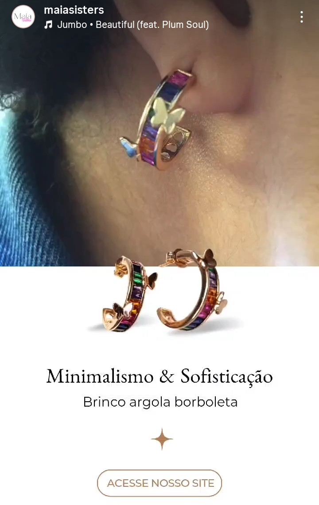
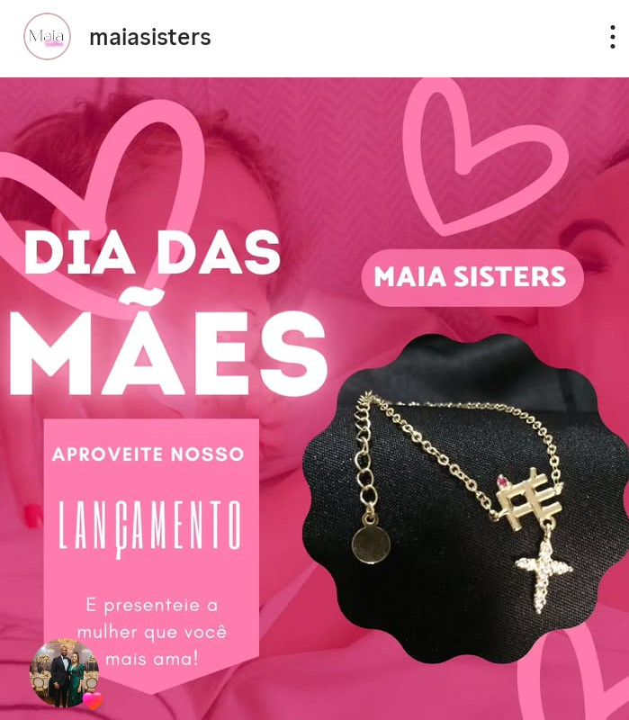
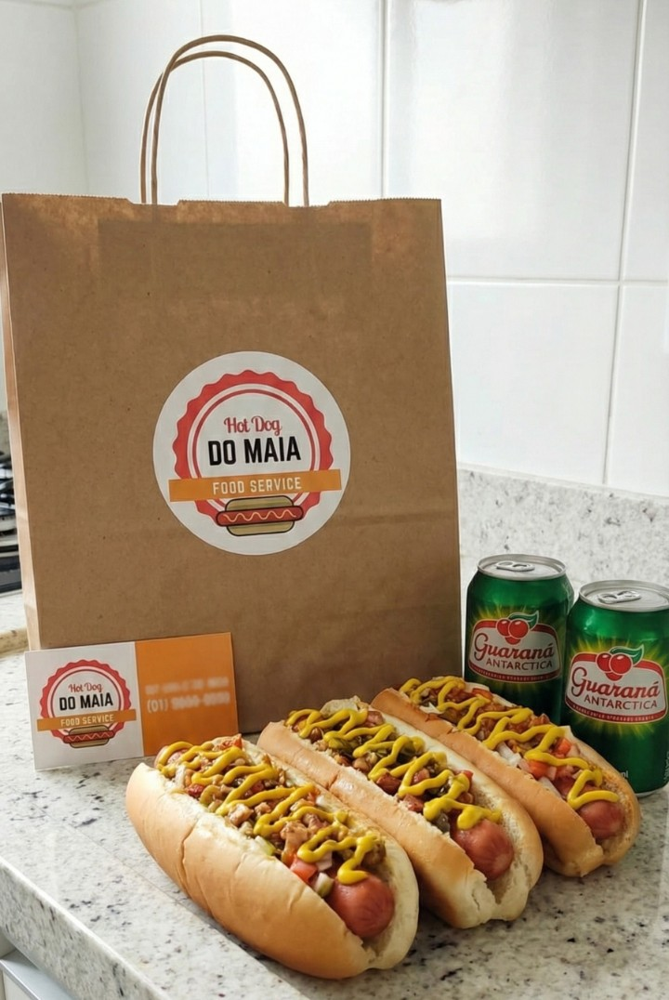

Estratégia, criação e construção de marcas do zero.
Minha primeira atuação estratégica em marketing foi há 17 anos, de forma prática e empreendedora.
Participei da criação e desenvolvimento completo de uma marca no segmento alimentício, desde a concepção do produto até o posicionamento no mercado.
Identifiquei oportunidades, realizei pesquisa de mercado, propus inovação de produto, desenvolvi identidade visual, comunicação estratégica, campanhas, copywriting e gestão de redes sociais. O negócio tornou-se referência local e operou por 12 anos.
Ao longo dos anos seguintes, continuei aplicando estratégias de marketing em diferentes projetos, incluindo Hot Dog do Maia, Maia Sisters e posicionamento artístico.
Mesmo sem formação acadêmica, acumulei 17 anos de experiência prática em branding, comunicação estratégica, marketing digital e desenvolvimento de marcas.
Hoje, uno criatividade, visão estratégica e execução técnica para transformar ideias em posicionamento e crescimento.
Criação completa de marca e posicionamento estratégico no segmento alimentício. Identifiquei oportunidade inédita: churros gourmet banhados no chocolate.
Desenvolvi a estratégia de produto, variações de sabores, naming das versões e comunicação voltada para diferentes públicos.
Estruturei toda a identidade da marca, copywriting, campanhas sazonais, produção de conteúdo, storytelling e posicionamento digital.
Criação da marca do zero para delivery de lanches, incluindo identidade visual estratégica com cores associadas a apetite.
Desenvolvi comunicação digital com linguagem jovem, campanhas promocionais, conteúdo diário, stories e ações sazonais.
Estruturação completa da marca e identidade visual. Desenvolvimento de e-commerce pela Trey, cadastro estratégico de produtos, banners e organização de categorias.
Integração com Instagram Shopping, gestão de vitrine digital e construção de presença visual coerente com o público feminino da marca.


